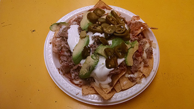

My Favorite Food
Nachos
I would gladly die before I give up eating Nachos

Ingredients
- Tortilla Chips
- Refried Beans
- Al Pastor
- Quaxa Cheese
- Avocado
- Sour Cream
- Pico de Gallo
- Jalapenos
Directions
- Lay tortilla chips in a large casserol dish
- Add refried beans, precooked al pastor, and Quaxa cheese on top
- Place in the over for 10,000 years
- Take it out once the cheese has melted
- Add sliced avocado, sour cream, and pico de gallo
- Add jalapneos for spice
For more info on Nachos checkout
this site